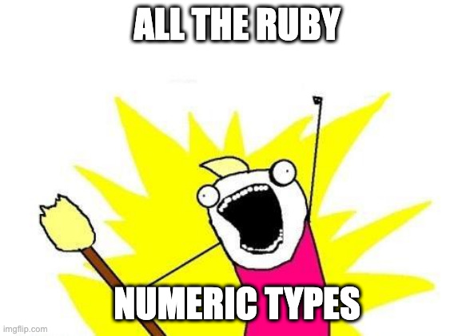

Ruby numeric types
Let's do some math
0.1 + 0.2
# => 0.30000000000000004
Agenda
📚 All numeric types
🔍 Precision
🏎️ Performance
⚙️ Extension
Rémy Hannequin
Developer
 thoughtbot
thoughtbot
@rhannequin
What is a number in Ruby?
Numbers are Numeric objects
Include Comparable
Just regular Ruby objects

Integer
Previously Fixnum and Bignum
Still used internally
Can store virtually any integer
# Number is an object
1
# Explicit conversion
Integer("1")
"1".to_i
# Implicit conversion
class Month
def to_int
index
end
end
Float
Fixed precision
Native double-precision floating-point
(IEEE 754 technical standard)
Similar to scientific notation
12.34
\[ 1.234 \times 10^{-1} \]
Two precision limits with Float
Limited in size
Float::MIN
Float::MAX
Limited by rounding
Base10 \[\frac 1 3 \approx 0.3333333333 \]Base2 \[\frac {1} {10} \approx 0.1000000001 \]
0.1 + 0.2 == 0.3
# => false
1.0
1.to_f
1/2 # => 0 Integer
1/2.0 # => 0.5 Float
Rational
Rational numbers
Quotient of two integers
1/3r
1/3.to_r
Rational(1, 3)
Rational are exact values
1 / 3.0
# => 0.3333333333333333, not _exactly_ 1÷3
1 / 3r
# => (1/3), exactly the number 1÷3
11.times.inject(0) { |t| t + 0.1 }
# => 1.0999999999999999, not _exactly_ 1.1
11.times.inject(0) { |t| t + 1 / 10r }
# => (11/10), exactly 1.1
Complex
Also called imaginary numbers
\[\imath^{2} = -1 \]
Complex.rect(1, 2) # => (1+2i)
"3-4i".to_c # => (3-4i)
BigDecimal
Part of the core standard Ruby library
require "bigdecimal"
BigDecimal("1.5")
# => 0.15e1
BigDecimal(1/3r, 20)
# => 0.33333333333333333333e0
Math support
require "bigdecimal/math"
Math::PI
# => 3.141592653589793
BigMath.PI(10)
# => 0.31415926535897932364198143965603e1
Irrational numbers

When does precision matter?
Money? Yes.
We do math with money
Use Integer or BigDecimal
Or gems like money
Everyday life? Maybe.
🧑🏫How many mangos of €3 can I buy
with a €50 note?
50 / 3
# => 16
Science? Depends.
Difference between
1.234567890123456° / 1.234567890123457°
smaller than any instrument resolution
Integer, Rational, BigDecimal: math
Float: any non-exact values
When does performance matter?
Integer, except decimal arithmetic
Floating-point numbers have been tuned for decades
Rational and BigDecimal for specific use-cases
require "benchable"
require "bigdecimal"
Benchable.bench(:ips, :memory) do
bench "Integer" { 1 + 1 }
bench "Float" { 1 + 0.0001 }
bench "Rational" { 1 + 1 / 1000r }
bench "BigDecimal" do
1 + BigDecimal("0.0001")
end
end
Iterations/speed comparison:
Integer: 7535799.6 i/s
Float: 7015345.0 i/s - 1.07x slower
Rational: 3329727.4 i/s - 2.26x slower
Bigdecimal: 1421481.1 i/s - 5.30x slower
Memory comparison:
Integer: 80 allocated
Float: 80 allocated - same
Rational: 240 allocated - 3.00x more
Bigdecimal: 432 allocated - 5.40x more
I want my own numeric type
Inheritance
class MyNumber < Numeric
Must:
- implement
#coerce
Should:
- implement arithmetic operators
- include
Comparable
Value objects
class Distance
attr_reader :meters
def self.from_m(meters)
new(meters)
end
# ...
end
distance = Distance.from_m(1) + Distance.from_m(2)
distance.meters
# => 3
Conclusion
Ruby supports most numbers
Ruby offers tradeoffs between precision and performance
Ruby is suitable for science projects
Ruby's idioms enable to go beyond just numbers